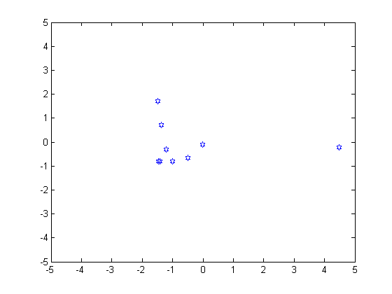

Bacterial Foraging Orientec by Particle swarm optimization
Animiation of bacteria movement to get the global minimum solution every chemotactic
%My work has been accpepted in GECCO 2008 as Graduat Student workshop. I %have used this techique in PID tunning and i got better result thatn BG %and PSO % % Author: Wael Mansour (wael192@yahoo.com) % % MSc Student, Electrical Enginering Dept, % Faculty of Engineering Cairo University, Egypt
%Initialization clear all clc p=2; % dimension of search space s=10; % The number of bacteria Nc=20; % Number of chemotactic steps Ns=4; % Limits the length of a swim Nre=4; % The number of reproduction steps Ned=2; % The number of elimination-dispersal events Sr=s/2; % The number of bacteria reproductions (splits) per generation Ped=0.25; % The probabilty that each bacteria will be eliminated/dispersed c(:,1)=0.5*ones(s,1); % the run length for i = 1:s Delta(:,i)=(2*round(rand(p,1))-1).*rand(p,1); end for m=1:s % the initital posistions P(1,:,1,1,1)= 50*rand(s,1)'; P(2,:,1,1,1)= 0.2*rand(s,1)'; %P(3,:,1,1,1)= .2*rand(s,1)'; end c1 =1.2; % PSO parameter C1 1.2 c2 = 0.5; % PSO parameter C2 .5 R1 = rand(p,s); % PSO parameter R2 = rand(p,s); % PSO parameter Plocal_best_position=0*ones(p,s,Nc); % PSO Pglobal_best_position=0*ones(p,s,Nc); % PSO velocity = .3*randn(p,s); % PSO current_position=0*ones(p,s,Nc); % PSO
%Main loop %Elimination and dispersal loop for ell=1:Ned %Reprodution loop for K=1:Nre % swim/tumble(chemotaxis)loop for j=1:Nc for i=1:s J(i,j,K,ell)=Live_fn(P(:,i,j,K,ell)); % Tumble Jlast=J(i,j,K,ell); Jlocal(i,j)=Jlast; P(:,i,j+1,K,ell)=P(:,i,j,K,ell)+c(i,K)*Delta(:,i); % This adds a unit vector in the random direction % Swim (for bacteria that seem to be headed in the right direction) J(i,j+1,K,ell)=Live_fn(P(:,i,j+1,K,ell)); m=0; % Initialize counter for swim length while m<Ns m=m+1; if J(i,j+1,K,ell)<Jlast Jlast=J(i,j+1,K,ell); P(:,i,j+1,K,ell)=P(:,i,j+1,K,ell)+c(i,K)*Delta(:,i) ; J(i,j+1,K,ell)=Live_fn(P(:,i,j+1,K,ell)); current_position(:,i,j+1)= P(:,i,j+1,K,ell) ; % PSO Jlocal(i,j+1) = J(i,j+1,K,ell) ; % PSO else Jlocal(i,j+1) = J(i,j+1,K,ell) ; current_position(:,i,j+1)= P(:,i,j+1,K,ell); m=Ns ; end end sprintf('The value of interation i %3.0f ,j = %3.0f , K= %3.0f, ell= %3.0f' , i, j, K ,ell ); end % Go to next bacterium %For each chemotactic evaluate the local and global best position %Local best position over all chemotactic that each bacteria move through it [Jmin_for_each_chemotactic,index]=min(Jlocal,[],2); for m=1:s Plocal_best_position(:,m,j) = current_position(:,m,index(m,:)); end %Global best position over all chemotactic and for each bacteria [Y,I]=min(Jmin_for_each_chemotactic); global_best_position =current_position(:,I,index(I,:)); for m =1:s Pglobal_best_position(:,m,j)=global_best_position; end %Caluculate the new direction for each bacteria velocity =.9* velocity + c1*(R1.*(Plocal_best_position(:,:,j)-current_position(:,:,j+1))) + c2*(R2.*(Pglobal_best_position(:,:,j)-current_position(:,:,j+1))); Delta = velocity ; x = P(1,:,j,K,ell); y = P(2,:,j,K,ell); clf plot(x, y , 'h') axis([-5 5 -5 5]); pause(.1) end % Go to the next chemotactic %Reprodution Jhealth=sum(J(:,:,K,ell),2); % Set the health of each of the S bacteria [Jhealth,sortind]=sort(Jhealth); % Sorts the nutrient concentration in order of ascending P(:,:,1,K+1,ell)=P(:,sortind,Nc+1,K,ell); c(:,K+1)=c(sortind,K); % And keeps the chemotaxis parameters with each bacterium at the next generation %Split the bacteria (reproduction) for i=1:Sr P(:,i+Sr,1,K+1,ell)=P(:,i,1,K+1,ell); % The least fit do not reproduce, the most fit ones split into two identical copies c(i+Sr,K+1)=c(i,K+1); end end % Go to next reproduction %Eliminatoin and dispersal for m=1:s if Ped>rand % % Generate random number P(1,:,1,1,1)= 0.2*rand(s,1)'; P(2,:,1,1,1)= 0.2*rand(s,1)'; %P(3,:,1,1,1)= .2*rand(s,1)'; else P(:,m,1,1,ell+1)=P(:,m,1,Nre+1,ell); % Bacteria that are not dispersed end end end % Go to next elimination and disperstal %Report reproduction = J(:,1:Nc,Nre,Ned); [jlastreproduction,O] = min(reproduction,[],2); % min cost function for each bacterial [Y,I] = min(jlastreproduction) pbest=P(:,I,O(I,:),K,ell)
Y =
-186.7309
I =
7
pbest =
-1.4251
-0.8003
